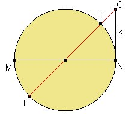
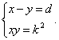
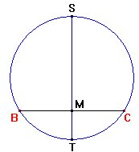
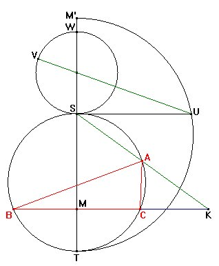

|
429. Construir un triángulo conociendo A, a, w'a (w'a es la bisectriz exterior de A). |
|
Sapiña, J. (1955): Problemas Gráficos
de Geometría,Litograf. Madrid. (Aparejador, Perito Industrial,
Profesor ) (p.65)
|
Solución de Juan Sapiña Borja, presentada por Francisco Javier García Capitán
La solución que Juan Sapiña da a este problema es la siguiente:

Construcción previa. Sapiña usa la construcción de segmentos x e y tales que
Según vemos en el libro de Bruño, para realizar esta construcción, trazamos una circunferencia con diámetro MN = d. Por el punto N trazamos una perpendicular NC = k y unimos C con cel centro de la circunferencia hasta volver a cortarla en F. Entonces tendremos CF = x y CE = y.

Solución del problema. Nuestro primer paso para llevar a cabo la construcción es fijar el segmento BC de longitud a y construir el arco capaz de dicho segmento para el ángulo A.A continuación trazamos el diámetro ST perpendicular a BC y el punto medio M de BC.

Ahora hallamos el punto M' simétrico de M respecto de S y una semicircunferencia de diámetro M'T.La perpendicular por S a TM' corta en U a la semicircunferencia y SU es la media geométrica de SM'=SM y ST.
Ahora podemos usar la construcción previa con SU y w'a, de manera que marcamos en la recta TS un punto W tal que SW = w'a, trazamos una circunferencia con diámetro SW y unimos U con el centro de dicha circunferencia hasta cortar otra vez a la misma en V. El segmento UV será igual a nuestra distancia SK.
Finalmente, siguiendo en todo momento las indicaciones de Sapiña, trazamos un arco con centro S y radio UV que determina el punto K y unimos K con S para obtener A sobre el arco capaz.
Applet de CabriJava.